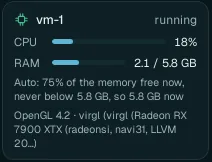

Desktop apps and the GPU
The apps of the VM are real Linux desktop apps. The ones that draw a lot (3D, video, large images) draw on your computer's graphics card, which the VM shares with your computer. You do not need to set anything: this page explains what happens, how to check it, and the two other ways for special cases.
Three ways to use your card#
| GPU setting | What the VM's apps get | For |
|---|---|---|
| Virtualized GPU (default) | Your card, shared with your computer: OpenGL, Vulkan and OpenCL, each through the fastest path your computer offers. | Everyone. Your own apps keep the card too. |
| Native GPU (experimental) | One of your cards, lent to the running VM: its apps use it with its own driver, at full speed, including CUDA (NVIDIA) and HIP (AMD). Your computer cannot use that card while it is lent. | Computers with a second graphics card that does not drive your screen, for heavy compute (GPU rendering, AI models). |
| None (CPU only) | Software graphics on the VM's processors: everything works, 3D is much slower. | Computers without a usable graphics card, or to rule the card out while looking for a problem. |
Change it in Settings › VM resources › Graphics › GPU; it applies at the VM's next start (Native GPU lends the card to the running VM). The graphics libraries the apps need are the GPU for apps tool, installed on the first start.
Which apps use it#
| App | On your card | Good to know |
|---|---|---|
| Blender | The 3D view, and EEVEE renders | Cycles renders on the VM's processors with the Virtualized GPU; with Native GPU it can use the card's CUDA or HIP. Agents test a render small first, then render the full size. |
| FreeCAD, Godot, BREP, Unity Hub | The 3D view (OpenGL, Vulkan) | |
| Kdenlive, OBS Studio | The preview and effects (OpenGL) | Encoding a video mostly uses the VM's processors. |
| GIMP, Inkscape, Glaxnimate, Motion Studio | Drawing the canvas | |
| Chromium, web apps, Web Game Studio | WebGL pages: 3D in the browser, maps, the web games Web Game Studio's Chat makes (three.js, Babylon.js…) |
The VM's processors and memory matter as much: a render or an encode uses the processors you allow in VM resources. Before heavy work (a render, a build, an encode), an agent reads what the VM has now and plans with it.
Check that apps use your card#

- The VM card (Home, bottom left): the last line names your card. llvmpipe there means software graphics: the VM is not using your card.
- Settings › VM resources › Graphics › In the VM: the path Vulkan, OpenGL and OpenCL each take now, on your card or on the VM's processors, in plain words.
- GPU use (same page): how busy each running VM keeps your card.
- In the VM's terminal:
glxinfo -B(OpenGL),vulkaninfo --summary(Vulkan),clinfo -l(OpenCL). - Smoothness: the tab's Desktop menu › FPS shows the frame rate of the app's picture (The Desktop menu).
Lend a card (Native GPU)#
Experimental. While a card is lent, your computer cannot use it; Wazza OS never lends the card your screen is plugged into.
Settings › VM resources › Graphics › GPU › Native GPU (passthrough, experimental), and pick the Card.
Read the Native GPU line: it says whether this computer can lend that card, and what to do first: close the programs that use it, move your screen's cable to another port, or the one-time setup Allow lending a card (it asks for your administrator password). Then Check again.
Apply. Wazza OS installs the card's driver in the VM first (AMD, Intel or NVIDIA), then lends the card to the running VM as a second graphics card: the VM's picture stays, and its apps use the card for their work.
Turning Native GPU off, or stopping the VM, gives the card back to your computer. Nothing is changed for good: a restart of your computer always gives every card back. Your computer needs IOMMU turned on in its firmware; the line says when it is not.
One card only? Lend-ready mode makes your computer draw its desktop with the processor from its next restart, so its only card can be lent. Turn it off to get the card back for your desktop (again from the next restart).
Graphics memory#
A VM may hold at most 50 % of the graphics memory free (Auto), where Linux can bound it (6.14 or newer); set another share or a fixed size in Graphics › GPU memory. Raise it for very large scenes; lower it to keep more for your own apps.
When 3D is slow#
- The VM card says llvmpipe: your card is not used. Run
wazza --checkon your computer: its Graphics driver line says what to fix (driver, permissions; NVIDIA needs its driver 495 or newer). - Close other tabs with 3D apps: they share the same card and the VM's processors.
- Give the VM more processors (VM resources › vCPUs).
- Lower the VM's screen size (Screen): fewer pixels to draw and send.
- More fixes: Troubleshooting.
From the command line#
$ wazza --gui gpu status
$ wazza --gui gpu mode virtualized
$ wazza --gui vm-gpu statusgpu mode takes virtualized, native or none; vm-gpu auto
PERCENT or vm-gpu set MIB sets the graphics memory.